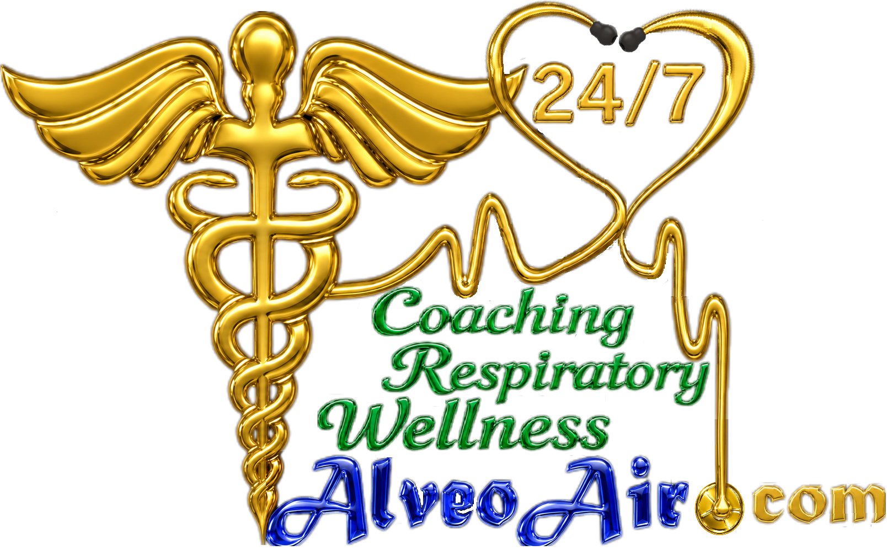

Terapia de Oxígeno y Guías de Seguridad
Uso adecuado, beneficios, riesgos y precauciones para el uso seguro del oxígeno en casa
USOS Y BENEFICIOS
- Proporciona oxígeno adicional por encima del aire ambiente normal (21%)
- Mejora los niveles de oxígeno en la sangre y órganos vitales
- Reduce la dificultad respiratoria (SOB)
- Ayuda a pacientes con EPOC, enfermedades pulmonares y cardíacas
- Ayuda durante la recuperación de enfermedades, cirugía o dificultad respiratoria
- Puede mejorar el sueño y la tolerancia a las actividades diarias
- Se utiliza durante el ejercicio cuando aumenta la demanda de oxígeno
- Es esencial en emergencias, RCP y reanimación
- Administrado mediante cánula nasal, mascarilla o collar de traqueostomía
- Puede suministrarse mediante tanques o concentradores de oxígeno
- Pueden necesitarse flujos más altos durante actividad o enfermedad
- El oxígeno por traqueostomía requiere humidificación
- Ayuda a mantener la oxigenación cerebral y de órganos vitales
- Puede mejorar la resistencia física y la calidad de vida
- Apoyo importante para pacientes domiciliarios y cuidadores
RIESGOS Y PRECAUCIONES
- El exceso de oxígeno en EPOC puede causar retención de CO₂
- El oxígeno debe ajustarse según la saturación y no por litros fijos
- La saturación objetivo típica en EPOC es 88–92%
- Niveles altos de oxígeno pueden reducir el impulso respiratorio en algunos pacientes
- El uso prolongado de oxígeno elevado puede causar toxicidad por oxígeno
- Puede provocar respiraciones superficiales y mala expansión pulmonar
- Aumenta el riesgo de acumulación de secreciones y neumonía si no se respira profundamente
- No es una droga, pero algunos pacientes pueden desarrollar dependencia psicológica
- El oxígeno favorece la combustión y representa un grave riesgo de incendio
- Nunca fumar ni permitir llamas cerca del equipo de oxígeno
- Puede causar quemaduras graves en cara y vías respiratorias si se expone a chispas o cigarrillos
- Requiere almacenamiento y manejo adecuados de los tanques de oxígeno
- El oxígeno seco puede irritar las vías respiratorias. Puede necesitarse humidificación.
- Los pacientes deben continuar respirando profundamente y mantenerse activos
- El uso inadecuado puede empeorar la condición respiratoria
NOTAS IMPORTANTES
- En emergencias, el oxígeno NO debe limitarse ni retenerse
- Puede ser necesario oxígeno en alta concentración (incluso 100%) para salvar la vida
- “No más de 2 litros” no es una regla estricta. Se requiere atención individualizada
- Siga siempre orientación profesional al ajustar niveles de oxígeno